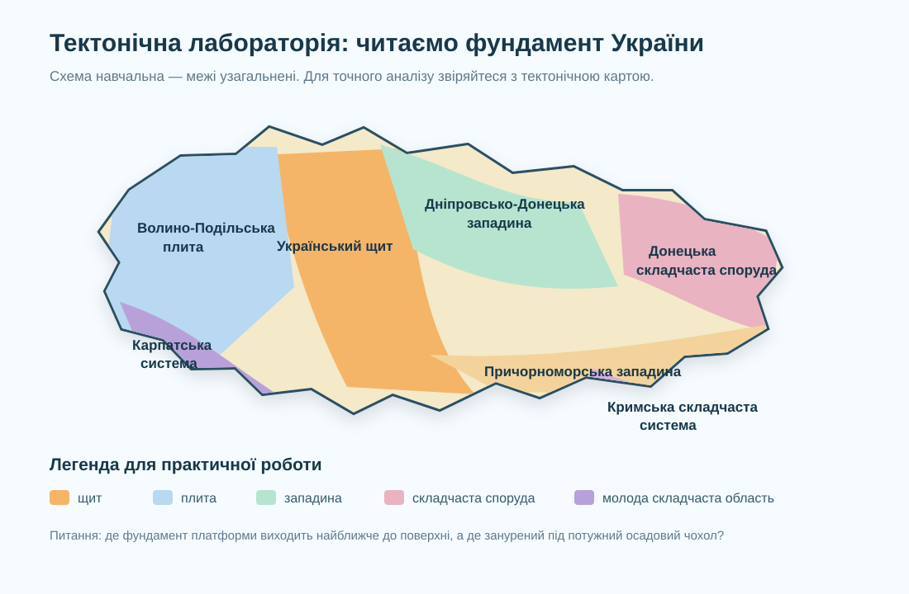

Чому гори, западини й землетруси не розкидані випадково?
Місія: за тектонічною картою пояснити, де в Україні кристалічний фундамент піднятий, де занурений, де кора була сильно зім’ята, а де сучасні рухи створюють підвищену сейсмічну небезпеку.
Де Ви очікували б найдавніші й найстабільніші ділянки земної кори: в Карпатах, у центральній частині України чи вздовж Чорного моря?
Тектонічна карта: не кольоровий фон, а модель будови кори

Порівняйте схему з реальною тектонічною картою України. На карті виділяються платформи, щити, плити, западини, складчасті області, розривні порушення та інші структури.
Тектонічна карта України ↗Геологічна будова України ↗7 структур, які треба не просто назвати, а зрозуміти
Фундамент давньої платформи піднятий і місцями виходить близько до поверхні. Саме тому тут багато відслонень кристалічних порід.
Кристалічний фундамент перекритий осадовим чохлом. На карті це вже не «щит», хоча платформа та сама.
Глибока зона прогину й розтягування земної кори з потужною товщею осадових порід.
Ділянка інтенсивних деформацій і складчастості, пов’язана з давнішими етапами тектонічного розвитку.
Молода складчаста область, де тектонічні рухи значно активніші, ніж на більшій частині давньої платформи.
Зона занурення фундаменту з потужним осадовим чохлом на півдні України.
Складчаста область півдня України, геодинамічно пов’язана із Середземноморсько-Альпійським поясом.
Де тектоніка стає питанням безпеки?
Сейсмічність України неоднакова. Для навчальної моделі виділіть підвищену увагу до Карпатського регіону, південного заходу, Криму та прилеглої акваторії Чорного моря. Але не плутайте «підвищену сейсмічну небезпеку» з прогнозом конкретного землетрусу.
Актуальний сейсмічний моніторинг України ↗Сейсмічне районування ↗Практична робота на 10 балів
Доведіть, а не просто назвіть
Теза: «Тектонічна карта допомагає пояснити сучасний рельєф і частково оцінити природні ризики України».
Зробіть власну тектонічну картку регіону
За тектонічною картою визначте структуру, на якій розташована Ваша область або найближча доступна для аналізу територія. Запишіть: 1) назву структури; 2) тип; 3) що відбувається з фундаментом; 4) яку форму рельєфу Ви очікуєте побачити; 5) один факт, який треба перевірити за картою рельєфу.
Тектонічна карта ↗Електронний підручник ↗